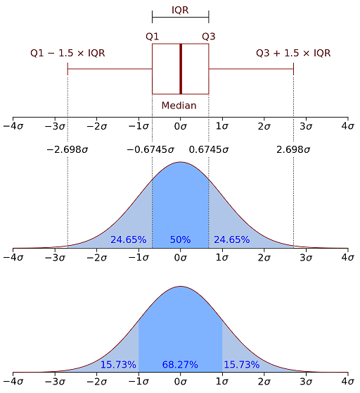

Explore Data
Explore Data quick reference, including data explore, manipulation, and I/O.
Toolkit
import pandas as pd
import numpy as np
import matplotlib.pyplot as plt
%matplotlib inline # magic function to show plot inside Notebook
Data Explore
Data structure
type(data) ## pandas.core.frame.DataFrame
data.info()
data.head()
data.tail()
Select, index, and filter
Select column or columns.
data["column"]
data[["column1", "column2"]]
Select data by index
pandas.DataFrame.loc
# index is a string
data.loc["label_1"]
data.loc["label_1":]
data.loc["label_1":"label_n"]
data.loc[["label_1", "label_2"]]
data.loc["label_1":"label_n", ["column_1", "column_n"]]
data.loc["label_1":"label_n", "column_1":"column_n"]
# index is an integer
data.loc[1:n]
Filter data
pandas.DataFrame.apply
data[data["column1"] == "foo"]
data[data.apply(lambda row: row["column1"] > 1 and row["column2"] > 2, axis=1)]
Statistics
Basic statistics
data.describe()
data["column"].min()
data["column"].max()
data["column"].quantile(.25)
data["column"].median()
data["column"].mean()
data["column"].std()
data["column"].var()
data["column"].plot(kind="box");

Reference:
Distribution
data.plot(kind="hist", bins=20, edgecolor="black");
data.plot(kind="kde");
plt.plot((mean, mean), (0, high), "--b", linewidth=1);
data["column"].skew()
Reference:
Count and proportion
pandas.Series.value_counts
data.describe(include="all")
data["column"].value_counts()
data["column"].value_counts(normalize=True)
data["column"].value_counts().plot(kind="bar");
Data manipulation
Column
pandas.DataFrame.drop
pandas.DataFrame.rename
data["NewColumn"] = data["column1"] / data["column2"]
data["NewColumn"] = data["column"].mean()
data.drop(columns=['column1', 'column2'])
data.rename(columns={"column": "NewColumn"})
data.columns = ["column1", "column2"]
Index
pandas.DataFrame.set_index
pandas.DataFrame.reset_index
data.set_index("column", inplace=True)
data.reset_index(inplace=True)
data.reset_index(inplace=True, drop=True)
Sort
pandas.DataFrame.sort_index
pandas.DataFrame.sort_values
data.sort_index(inplace=True)
data.sort_values(by=['column'])
Duplicate
pandas.DataFrame.duplicated
pandas.DataFrame.drop_duplicates
data[data.duplicated()]
data[data.duplicated(["column"])]
data.drop_duplicates()
data.drop_duplicates(["column"])
NA values
result.fillna()
result.fillna(value={"column": 0})
Sets
pandas.concat pandas.DataFrame.join
data = pd.concat([data1, data2], axis=1)
data = pd.concat([data1, data2], axis=1, sort=True)
data = pd.concat([data1, data2])
data1.join(data2, how="outer", lsuffix="_left", rsuffix="_right")
data1.set_index("column").join(data2.set_index("column"))
I/O
pandas I/O API
I/O performance
The top-three are test_pickle_write, test_feather_write and test_hdf_fixed_write_compress.
The top three are test_feather_read, test_pickle_read and test_hdf_fixed_read.
SQL
import pyodbc
driver = "{ODBC Driver 17 for SQL Server}"
server = "DATABASE_SERVER.database.windows.net"
database = "DATABASE"
username = "USERNAME"
conn_str = f"DRIVER={driver}; SERVER={server}; DATABASE={database}; UID={username}; Encrypt=yes; Authentication=ActiveDirectoryInteractive"
conn = pyodbc.connect(conn_str)
sql = f"""
SELECT
Column1,
Column2
FROM Table
"""
data = pd.read_sql(sql, conn)
CSV
pd.read_csv(file_name)
pd.read_csv(file_name, delimiter='\t')
pd.read_csv(file_name, error_bad_lines=False)
Python Pickle format
data.to_pickle(file_name)
data = pd.read_pickle(file_name)